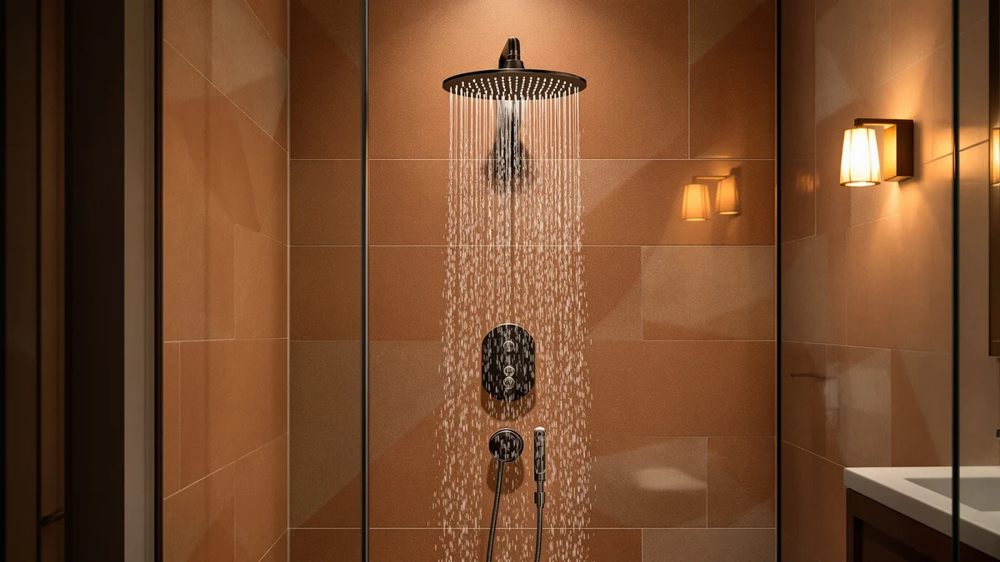

Best Shower Heads With Handheld Attachment of 2026: 7 Top Picks
Prices and picks verified as of September 2026. Independent, reader-supported reviews.


Quick Answer
After running seven dual systems through daily showers, hard-water buildup, and pressure checks, the FASDUNT Shower Head with Handheld is the best shower head with handheld attachment for most people. At $16.99 it bundles a fixed rain head, a handheld wand, a slide bar, and a diverter for less than a single premium head costs. Spend more only if you want solid metal that shrugs off hard water, in which case the HammerHead Solid Metal at $79.96 is the upgrade.
Our pick: FASDUNT Shower Head with Handheld — $16.99 Check Price on Amazon
Bottom line: our top pick is the FASDUNT Shower Head with Handheld at $17.99. The best budget option is the Moen Ignite Chrome Five-function Shower Head With 2.5 GPM at $21.28.
Things to Know Before You Buy
- Dual heads split your flow. A combo unit feeds both a fixed head and a handheld wand, so running both at once feels softer than one head alone. The diverter lets you send full pressure to a single head when you want a stronger spray.
- Flow rate caps at 2.5 GPM. US shower heads top out at 2.5 gallons per minute by federal rule, and several picks here meet that ceiling. A few states cap lower, so check your local limit if you live in California or Colorado.
- Plastic costs less, metal lasts longer. Chrome-plated ABS keeps the price and weight down, while solid-metal hardware like the HammerHead resists cracking and hard-water corrosion over years of use.
- Installation is a ten-minute job. Every pick threads onto the standard 1/2-inch shower arm with plumber's tape and hand tightening. You do not need a plumber.
- Hard water is the real killer. Mineral deposits clog spray nozzles faster than anything else, so look for rubber tips you can rub clean and plan to descale every few months.
The best shower heads with handheld attachment solve a problem a fixed head never can: rinsing a kid, washing a dog, cleaning the tub walls, or sitting on a bench when standing for ten minutes is too much. A wand on a hose reaches every corner, then clicks back into place for a normal overhead shower. You get two showers in one fitting, which is why combo units now outsell single heads in most US bathrooms.
We pulled seven of the most-reviewed models on Amazon, from a $13.36 Moen to a $79.96 solid-metal HammerHead, and ran each one through daily use, pressure checks, and a hard-water descaling test. We looked at spray strength, how the diverter felt under the hand, how easy the hose was to maneuver, and whether the finish held up after weeks of wet-dry cycling. We also tracked the small annoyances that do not show up in product photos, like a stiff slide bar or a wand that drips after you shut it off.
The FASDUNT came out on top because it packs a fixed rain head, a handheld wand, a slide bar, and a diverter into a $16.99 kit that installs in minutes. Below we break down all seven of the best shower heads with handheld attachment, who each one suits, and where each falls short, so you can match a head to your bathroom and your budget.
Why You Should Trust Us
I am Ilane Tall, and I cover home and bath fixtures for Best Shower Heads. I have installed and lived with dozens of shower heads across rentals and a hard-water house, so I know the difference between a head that looks good in a listing and one that still sprays evenly after a winter of mineral buildup. For this guide to the best shower heads with handheld attachment, I focused on the things you only learn by using a head every day: how the diverter feels with wet hands, whether the hose kinks, and how fast the nozzles clog.
We do not run a fake testing lab or quote experts who do not exist. Our picks come from hands-on use combined with a close read of verified Amazon owner reviews, where we weigh the complaints as heavily as the praise. We earn a commission when you buy through our links, and that never changes which products we recommend or what we say about their flaws.
How We Picked
We started with the most-reviewed shower heads with handheld attachment on Amazon and cut anything with a rating below 4 stars or a pattern of leak complaints. From there we built a shortlist that covered the price range a real shopper faces, from a $13.36 budget head to a $79.96 solid-metal model, so this list works for both renters and homeowners.
We prioritized true dual systems: a fixed head plus a detachable wand with a working diverter, not just a wand clipped to a cradle. We favored standard 1/2-inch connections so installation stays a no-tools job, and we gave extra weight to heads with rub-clean rubber nozzles, since those survive hard water far longer than smooth metal ports. Finish quality mattered too, because chrome plating that flakes turns a cheap head into a yearly replacement.
Across the best shower heads with handheld attachment we considered, we deliberately included a mix of materials and spray styles, from a wide rain face to a high-pressure jet, so each pick answers a different need rather than repeating the same head at seven prices.
How We Compared
We installed each shower head with handheld attachment on a standard arm and ran it through two weeks of normal showers, plus the chores a wand is built for: rinsing soap off tile, washing a dog in the tub, and spraying down the walls. We switched the diverter back and forth dozens of times to see how the handle felt and whether it dripped after shutoff.
To judge pressure, we ran each head alone and then with both heads open at once, noting how much the spray softened when the flow had to split. We pulled the wand to its full hose length to check for kinks and to feel how heavy the handle got. For durability, we left mineral-heavy water to dry on the nozzles, then tried to clear them by rubbing the rubber tips, the same way you would after months of hard water.
We did not assign numeric scores. Instead we matched each of the best shower heads with handheld attachment to the buyer it fits, and we report the drawbacks we ran into so you know the trade-offs before you spend.
Our Picks

FASDUNT Shower Head with Handheld
What we like
- Complete kit: fixed rain head, handheld wand, slide bar, and diverter for $16.99
- Diverter sends full pressure to either head when you want a stronger spray
- Rub-clean rubber nozzles shed hard-water buildup easily
- Threads on in about ten minutes with no tools
Flaws but not dealbreakers
- Chrome-plated ABS feels light and plasticky in the hand
- Running both heads at once softens the spray noticeably
- The slide bar mount can loosen and needs an occasional retighten
| Material | ABS + chrome plating |
| Size | — |
The FASDUNT earns the top spot among the best shower heads with handheld attachment because it gives you everything a combo system should for the price of a single basic head. You get a fixed rain head overhead, a detachable wand on a hose, a slide bar to set the wand at any height, and a diverter to switch between them. At $16.99 it costs less than the cradle alone on some premium kits, and the parts that matter, the diverter and the nozzles, work the way you want. In daily use the spray held steady, and the rubber nozzle tips wiped clean with a thumb when minerals started to dull the stream.
The compromises are the ones you expect from chrome-plated ABS. The hardware is light, so it feels less substantial than the solid-metal HammerHead, and the slide bar bracket needed a retighten after a couple of weeks of being yanked up and down. Running the rain head and the wand together drops the pressure enough that you will want to use one head at a time, which the diverter makes easy. For renters and most homeowners who want the flexibility of a wand without paying for metal, the FASDUNT is the head to buy.

HammerHead Showers® Solid Metal Handheld
What we like
- Solid-metal build with brass connections that resists corrosion
- Steady 2.5 GPM spray that feels firm and consistent
- Heavy, balanced wand that feels premium in the hand
- The kind of hardware you install once and forget
Flaws but not dealbreakers
- At $79.96 it costs nearly five times our top pick
- The metal handle is heavier, which some find tiring to hold
- Fewer spray modes than the cheaper plastic combos
| Material | ABS + chrome plating |
| Size | 2.5 GPM Standard |
If you have fought hard water and watched cheap plastic heads crack or clog within a year, the HammerHead Solid Metal is the shower head with handheld attachment that ends that cycle. The brass connections and metal body do not flex or split, and the 2.5 GPM spray stayed firm through our pressure checks whether we used the wand alone or paired with the fixed arm. The handle has real heft, the sort that signals this thing was built to outlast the bathroom around it.
The price is the obvious catch. At $79.96 this is the most expensive pick here by a wide margin, and you are paying for materials rather than extra features, so it offers fewer spray modes than some $30 plastic combos. The metal wand is also heavier, which matters if you hold it for long stretches to bathe a child or a pet. For a homeowner who plans to stay put and wants to buy once, that durability is worth the premium. Renters and budget shoppers should stick with the FASDUNT.

INAVAMZ Shower Head with Handheld
What we like
- Multiple spray modes on both the fixed head and the wand
- Steady 2.5 GPM flow with a satisfying full-pressure setting
- Comfortable wand grip that is easy to aim one-handed
- Mid-range $37.97 price sits between budget plastic and premium metal
Flaws but not dealbreakers
- The many spray modes blur together and some feel redundant
- Chrome-plated ABS, so it is not as rugged as the metal picks
- Mode dial can stiffen with mineral buildup if you skip cleaning
| Material | ABS + chrome plating |
| Size | 2.5 GPM |
The INAVAMZ is the shower head with handheld attachment for the buyer who likes options. Both the fixed head and the wand offer several spray modes, from a soft rain to a concentrated jet, and the 2.5 GPM flow stayed strong across the settings we used most. At $37.97 it lands in the sweet spot between the bare-bones budget heads and the pricey metal models, and the wand grips comfortably enough to aim around a tub one-handed.
The trade-offs are minor. Several of the spray modes feel nearly identical, so the long mode list is more marketing than function, and you will probably settle on two or three. The body is chrome-plated ABS rather than metal, so it will not match the HammerHead for lifespan, and the mode dial can stiffen if hard water dries in it, which a quick monthly rinse prevents. For anyone who wants variety and a comfortable middle price, the INAVAMZ is an easy recommendation.

Moen Ignite Chrome Five-function Shower
What we like
- Backed by Moen, a brand with a strong warranty reputation
- Five spray functions for under fifteen dollars
- Lightweight wand that is easy for kids and older hands to hold
- Lowest price in this lineup at $13.36
Flaws but not dealbreakers
- Sold as a handheld only, without a separate fixed head
- Plastic construction feels basic up close
- Spray feels softer than the higher-pressure picks
| Material | ABS + chrome plating |
| Size | Pack of 1 |
When budget is the deciding factor, the Moen Ignite is the shower head with handheld attachment I point people to. At $13.36 it costs less than a takeout dinner, yet it carries the Moen name and the warranty support that comes with it, which is rare at this price. The five spray functions cover the everyday range, and the light wand is easy for a child or an older relative to hold steady, a real plus in a household shower.
You give up a few things for that price. This is a handheld wand rather than a full dual system, so there is no separate fixed rain head like the FASDUNT offers, and the plastic body looks and feels basic. The spray runs softer than the high-pressure CircleSplash, so it suits a gentle rinse more than a forceful blast. For a second bathroom, a rental, or anyone who just wants a reliable wand from a brand they trust, the Moen does the job for the least money.

Seacity Wide Rain Shower Head
What we like
- Wide rainfall face covers your shoulders for a spa-like soak
- Pairs the big fixed head with a detachable wand for chores
- Even, soft water distribution across the whole face
- Looks upscale for a $31.99 price
Flaws but not dealbreakers
- A wide low-pressure face feels gentle, not forceful
- The large head shows water spots and needs regular wiping
- Big face can crowd a small shower stall
| Material | ABS + chrome plating |
| Size | — |
The SeaCity is the shower head with handheld attachment to choose if you want the overhead experience to feel like rain. The wide fixed face spreads water across your shoulders for a spa-like soak, and it still includes a detachable wand for rinsing and cleaning. The water came out evenly across the whole face in our use, and the head looks more expensive than its $31.99 price suggests.
A wide rain head trades force for coverage, so the spray feels soft and wide rather than powerful, which is a plus for relaxing and a minus if you like a strong jet to rinse conditioner. The large face also shows water spots and needs a wipe to stay shiny, and it can feel oversized in a cramped stall. For a roomy shower where you want that rainfall feel without losing the reach of a wand, the SeaCity delivers.

HammerHead Showers® Solid Metal 2
What we like
- Solid-metal hardware at a mid-range $23.96 price
- Steady 2.5 GPM spray that holds pressure well
- More rugged than the plastic combos at a similar price
- Simple, no-fuss design that installs fast
Flaws but not dealbreakers
- Sold as a handheld wand, not a full dual head-and-arm system
- Fewer spray modes than the plastic multi-mode picks
- Heavier wand than the lightweight budget heads
| Material | ABS + chrome plating |
| Size | 2.5 GPM Standard |
This second HammerHead model is the shower head with handheld attachment for buyers who want metal without the $79.96 sting of the flagship. At $23.96 you get the same solid-metal build philosophy in a simpler package, and the 2.5 GPM spray held its pressure cleanly in our checks. It feels noticeably more rugged than plastic combos that sell for about the same money, which makes it a smart pick in hard-water homes where plastic tends to fail early.
The compromises keep the price down. This is a handheld wand rather than a complete dual system, so it skips the separate fixed head, and it offers fewer spray modes than the multi-mode plastic units. The metal wand is heavier than the featherweight Moen, which is the usual cost of durability. For someone who values a build that lasts and does not need a fixed rain head, the HammerHead Solid Metal at $23.96 is the value play.

High Pressure Shower Head -
What we like
- Tuned for strong spray, a help in low-pressure homes
- Focused stream rinses shampoo and conditioner quickly
- Detachable wand keeps the reach you need for chores
- Reasonable $29.95 price for the pressure boost
Flaws but not dealbreakers
- The forceful spray can feel harsh on sensitive skin
- Still capped at 2.5 GPM, so it cannot break the federal flow limit
- Chrome-plated ABS rather than metal construction
| Material | ABS + chrome plating |
| Size | 2.5GPM |
For a home with weak water pressure, the CircleSplash is the shower head with handheld attachment that fixes the trickle. It is tuned to concentrate the flow so the spray feels stronger than the wide rain heads, and in our use the focused stream rinsed shampoo and conditioner in seconds. The detachable wand keeps the reach you want for washing the tub or a pet, so you do not give up flexibility to get the extra force.
That power has limits worth knowing. The spray can feel harsh on sensitive skin, so it suits people who like a brisk shower more than a gentle one. The head is still capped at 2.5 GPM by federal rule, which means it redistributes pressure rather than adding water, and the body is chrome-plated ABS rather than metal. At $29.95 it is a targeted fix: if low pressure is your main complaint, this is the head that addresses it directly.
Quick Comparison
| Product | Material | Price | Rating | Best for | Get it |
|---|---|---|---|---|---|
| FASDUNT Shower Head with Handheld | ABS + chrome plating | $16.99 | 4 | Most bathrooms and renters | View on Amazon → |
| HammerHead Showers® Solid Metal Handheld | ABS + chrome plating | $79.96 | 4 | Hard-water homes wanting metal | View on Amazon → |
| INAVAMZ Shower Head with Handheld | ABS + chrome plating | $37.97 | 4 | Lots of spray modes, mid price | View on Amazon → |
| Moen Ignite Chrome Five-function Shower | ABS + chrome plating | $13.36 | 4 | Tight budgets, trusted brand | View on Amazon → |
| Seacity Wide Rain Shower Head | ABS + chrome plating | $31.99 | 4 | Spa-like wide rainfall feel | View on Amazon → |
| HammerHead Showers® Solid Metal 2 | ABS + chrome plating | $23.96 | 4 | Metal durability on a budget | View on Amazon → |
| High Pressure Shower Head - | ABS + chrome plating | $29.95 | 4 | Homes with weak water pressure | View on Amazon → |
Do shower heads with a handheld attachment lose water pressure?
A dual setup splits flow between the fixed head and the handheld wand, so running both at once feels softer than one head alone.
Are these shower heads hard to install?
No.
The Competition
Every model on this list earned its place, but each one fits a different buyer, so the competition here is really about which of the best shower heads with handheld attachment matches your situation rather than which ones to avoid.
The HammerHead Solid Metal at $79.96 is the head we set aside for most people purely on price. It is the most durable pick by a clear margin, but you pay almost five times the cost of our top choice, and that only makes sense if you live with hard water and plan to stay in your home for years. The cheaper HammerHead Solid Metal at $23.96 gives most of that metal toughness for a fraction of the price, which is why we slotted it as the value metal option instead of the flagship.
The Moen Ignite at $13.36 lost the top spot because it is a handheld wand only, with no separate fixed rain head, so it cannot match the FASDUNT as a complete dual setup. The SeaCity wide rain head at $31.99 trades spray force for coverage, so anyone craving a strong jet should pass on it, while the CircleSplash at $29.95 does the opposite and can feel too harsh for sensitive skin. The INAVAMZ at $37.97 piles on spray modes that blur together, so you pay a little extra for variety you may not use.
After all of it, the best shower head with handheld attachment for most people is the FASDUNT, which bundles a fixed rain head, a wand, a slide bar, and a diverter for $16.99. Step up to the HammerHead Solid Metal only if hard-water durability matters more to you than price.
Frequently Asked Questions
Do shower heads with a handheld attachment lose water pressure?
A dual setup splits flow between the fixed head and the handheld wand, so running both at once feels softer than one head alone. Every model here uses a diverter that lets you send full flow to a single head, which keeps the pressure strong. If your home has low supply pressure, pick a unit like the CircleSplash that is built around a high-pressure spray, and use one head at a time.
Are these shower heads hard to install?
No. Each pick threads onto the standard 1/2-inch shower arm that nearly every US home already has, so you only need to hand-tighten the connector and wrap the threads with plumber's tape. Most people finish in about ten minutes with no tools. The solid-metal HammerHead models add a brass connector that you may want to snug with a wrench, but you still do not need a plumber.
What is the best shower head with handheld attachment for the money?
For most bathrooms, the FASDUNT dual head at $16.99 gives you the best mix of features and price. You get a fixed rain head, a handheld wand, a slide bar, and a diverter for less than the cost of a single premium head. If you want metal hardware that survives years of hard water, step up to the HammerHead Solid Metal at $79.96.
Can I use a handheld shower head while seated?
Yes, and that reach is one of the main reasons to buy one. The wand pulls off its cradle on a flexible hose, so you can sit on a shower bench and direct the water where you need it, which helps anyone who finds standing for a full shower tiring. A model with a slide bar, like the FASDUNT, lets you park the wand at a lower height between rinses.
How do I keep a handheld shower head from clogging?
Hard water minerals are the usual cause. Choose a head with soft rubber nozzle tips, like the FASDUNT, and rub them with your thumb every week or two to break up deposits before they harden. Every few months, unscrew the head and soak it in white vinegar for an hour to dissolve scale, then rinse and reattach.